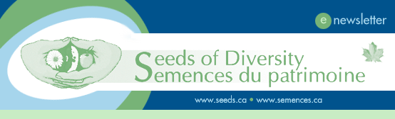
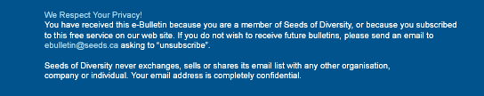

|  | |||
|
In this issue:
Seeds of Diversity's 2007 Seed Exchange Directory is on its way to our members' mailboxes, and it's brimming with over 2500 offers of home-grown, heritage seeds from our growers. All members can request seeds through the Directory, even if they don't have their own seeds to exchange. Requests are made by sending $2 in stamps, Canadian Tire money, or cash, directly to the grower. This is a great way to sample the incredible diversity of Canadian heritage seeds, and learn how to improve your garden and your skills from our generous and friendly seed savers. This year, our grower members offer:
Seeds of Diversity's 2006 conference brought members together in Montreal to hear passionate speeches by distinguished defenders of plant biodiversity. Prince
Louis-Albert de Broglie, the “Tomato Prince” of Le Conservatoire
de la Tomate, Didier Meunier of France's Kokopelli Seed Foundation urged us to heed the tragic loss of vegetable and fruit varieties that has occurred in Europe, and to save our own varieties before they too vanish forever. Alexander Reford, of Quebec's famous Reford Gardens, dazzled us with scenes from their astounding collections of peonies, poppies, and native sanguinaria. A reminder of the treasures that gardeners protect and preserve, and the duty that we share in passing such living jewels on to future generations. These champions of horticultural diversity are featured in our Winter 2007 magazine. More
information on our speakers: Seeds of Diversity Canada would like to welcome its newest team member, Valérie Girard. Ms. Girard has been brought on board as Communications Coordinator. Valérie comes to us with an interesting background. In 1999 she graduated from Vanier College with a technical degree in Ecological Techniques. She worked as a biological assistant intern at the Canadian Museum of Nature and for the Institute for Bird Populations in the Sierra Nevada mountain chain in California. She returned to Montreal and continued her studies, graduating from Concordia University in 2002 with a bachelor’s degree in Geography. Since then, Valérie has been working at the Jane Goodall Institute of Canada as Membership Coordinator for Jane Goodall’s global environmental and humanitarian education program, Roots & Shoots. Valérie’s skills and experience will be used to strengthen SoDC’s Francophone and Anglophone network in Quebec. Her first tasks include bringing back the monthly e-newsletters to members, and assisting her colleagues in the organisation of upcoming SoDC winter events in Quebec. Stay tuned… Contact Valérie at valerie@seeds.ca
Seedy Saturdays A
Seedy Saturday is coming to a community near you! Volunteers Needed Seeds of Diversity could not exist without the dedicated volunteers who make us more than a collection of seeds – it is also a network of dedicated people “growing” a better world. At this time, we are looking for volunteer to help us with:
For more details on how to get involved, contact valerie@seeds.ca |
|||
|  | |||
Design by Allison Prindiville
Copyright © 2007 Seeds of Diversity Canada